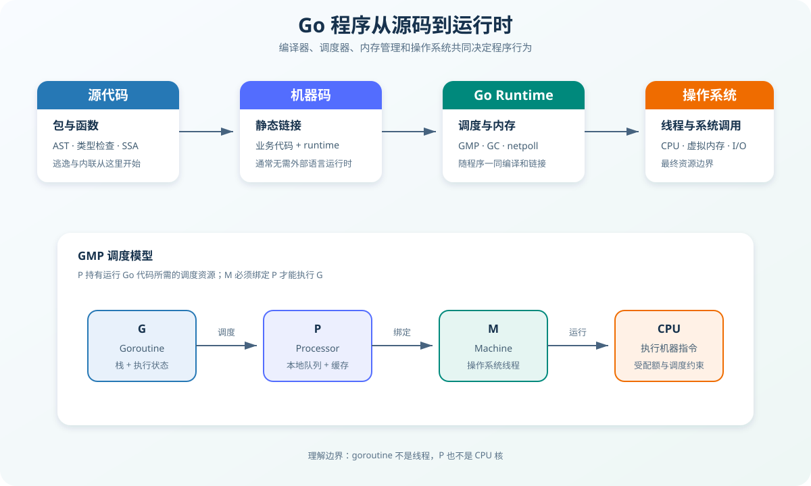
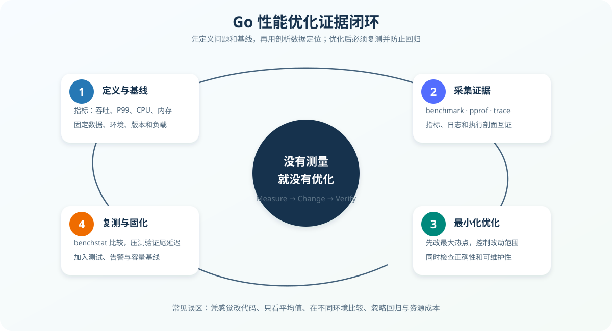

Go 底层原理与工程化实践
本文面向已经掌握 Go 基础语法、希望理解“代码为何这样运行”以及“生产项目应如何落地”的开发者。内容以 Go 1.22 及之后的现代工具链为背景；运行时结构会随版本演进，结论应以当前版本源码、编译器输出和实际测量为准。
1. 建立正确的认知模型
Go 的简洁并不意味着底层简单。一段 Go 代码最终会穿过四层：
- 语言层：类型系统、接口、切片、
defer、panic等语义。 - 编译器层：类型检查、SSA 优化、内联、逃逸分析和机器码生成。
- 运行时层：GMP 调度、栈增长、垃圾回收、内存分配和网络轮询。
- 操作系统层：线程、虚拟内存、文件描述符、系统调用和 CPU 调度。

分析问题时必须先判断它属于哪一层。例如：
- “接口是否为
nil”主要是语言的数据表示问题； - “变量为什么分配到堆上”是编译器的逃逸决策；
- “goroutine 为什么长时间不运行”可能涉及运行时调度；
- “容器内
GOMAXPROCS是否合理”还受到操作系统 CPU 配额影响。
不要把当前编译器实现当成语言规范保证。可以依赖规范定义的行为，但性能结论必须通过当前工具链验证。
2. 编译、链接与初始化
2.1 从源码到可执行文件
一个包大致会经历：
源码
↓ 词法与语法分析
AST
↓ 类型检查
带类型的中间表示
↓ SSA 构建与优化
机器码
↓ 链接业务包、依赖和 runtime
可执行文件
常用观察命令：
# 查看逃逸和内联决策
go build -gcflags="all=-m=2" ./...
# 查看汇编。-S 输出较多，通常应限定到具体包
go build -gcflags="-S" ./path/to/pkg
# 查看依赖和构建过程
go build -x ./cmd/server
# 检查二进制符号
go tool nm ./server
go build 会利用构建缓存。排查“为什么没有重新编译”时，可用 go clean -cache 清理缓存，但不应把清缓存当作日常构建步骤。
2.2 包初始化顺序
包级初始化遵循依赖关系：
导入的依赖包
→ 当前包的包级变量
→ 当前包的 init 函数
→ main.main
同一个包中的初始化顺序由文件和声明规则共同决定，但工程代码不应依赖脆弱的文件排列。init 无法显式传参、返回错误或方便测试，因此只适合轻量且确定性的注册行为。
不推荐：
var db = mustConnectDatabase() // 导入包时产生网络副作用
推荐显式装配：
func main() {
cfg, err := LoadConfig()
if err != nil {
log.Fatal(err)
}
db, err := OpenDatabase(cfg.Database)
if err != nil {
log.Fatal(err)
}
defer db.Close()
app := NewApplication(db)
if err := app.Run(context.Background()); err != nil {
log.Fatal(err)
}
}
3. 数据布局与值语义
理解 Go 的值语义，是避免共享状态、内存滞留和并发错误的基础。
3.1 数组与切片
数组是包含全部元素的值：
a := [3]int{1, 2, 3}
b := a
b[0] = 99
fmt.Println(a[0]) // 1，数组被复制
切片不是数组本身，可以近似理解为一个描述符：
type sliceHeader struct {
Data unsafe.Pointer
Len int
Cap int
}
这是帮助理解的概念模型，不应使用 unsafe 手工操作运行时结构。复制切片只会复制描述符，底层数组仍可能共享：
a := []int{1, 2, 3}
b := a
b[0] = 99
fmt.Println(a[0]) // 99
append 是否影响原切片，取决于容量是否足够：
base := make([]int, 2, 4)
alias := base[:1]
alias = append(alias, 7) // 复用底层数组
fmt.Println(base) // [0 7]
需要隔离所有权时应显式复制：
dst := append([]byte(nil), src...)
// 或 Go 1.21+
cloned := slices.Clone(src)
小切片引用大数组
func firstKB(data []byte) []byte {
return data[:1024]
}
返回的小切片仍引用整个底层数组，可能使大对象无法被 GC 回收。应复制真正需要的数据：
func firstKB(data []byte) []byte {
n := min(1024, len(data))
result := make([]byte, n)
copy(result, data[:n])
return result
}
3.2 字符串
字符串是只读字节序列，概念上由数据指针和长度组成。len(s) 返回字节数，不是 Unicode 字符数：
s := "Go语言"
fmt.Println(len(s)) // 8：字节数
fmt.Println(utf8.RuneCountInString(s)) // 4：码点数
遍历方式决定语义：
for i := 0; i < len(s); i++ {
fmt.Printf("%x ", s[i]) // 按字节
}
for index, r := range s {
fmt.Printf("%d:%c ", index, r) // index 仍是字节偏移
}
字符串和 []byte 的转换通常会产生复制。性能敏感路径先用 benchmark 证明转换是热点，再考虑优化；不要为消除一次复制而贸然引入 unsafe。
3.3 map
map 是引用型数据结构。几个工程上必须牢记的性质：
- 读取不存在的键会返回元素类型零值；
- 必须使用
value, ok := m[key]区分“不存在”和“值恰好为零值”； - 遍历顺序未定义，不能用于协议稳定输出；
- 普通
map不支持并发读写； - 向未初始化的
nil map写入会 panic。
count, ok := counters["success"]
if !ok {
// 键不存在
}
需要稳定输出时先排序键：
keys := make([]string, 0, len(m))
for key := range m {
keys = append(keys, key)
}
slices.Sort(keys)
for _, key := range keys {
fmt.Println(key, m[key])
}
并发场景通常优先使用 map + sync.RWMutex，因为类型清晰、复合操作容易保持原子性。sync.Map 更适合键集合相对稳定、写少读多，或不同 goroutine 操作互不相交键集合的场景。
3.4 接口与 nil 陷阱
接口值可以抽象为：
(动态类型, 动态值)
只有二者都为空时，接口才等于 nil：
type AppError struct {
Message string
}
func (e *AppError) Error() string { return e.Message }
func load() error {
var err *AppError = nil
return err // 返回的接口包含动态类型 *AppError，因此不等于 nil
}
正确方式是在没有错误时直接返回无类型的 nil：
func load() error {
var err *AppError
if err != nil {
return err
}
return nil
}
接口应由使用方定义，并保持最小：
type UserFinder interface {
FindByID(ctx context.Context, id string) (User, error)
}
“接受接口，返回具体类型”是有用的默认原则，但不是机械规则。公共 API 的核心是最小依赖、清晰契约和可演进性。
4. 栈、堆与逃逸分析
4.1 变量为何逃逸
变量在栈上还是堆上，不由 new、make 或是否使用指针单独决定，而由编译器证明对象生命周期的结果决定。
func newCounter() *int {
value := 0
return &value
}
value 离开函数后仍被引用，因此通常逃逸到堆。另一种常见逃逸来自接口装箱、闭包捕获、尺寸过大或编译器无法证明生命周期。
检查方式：
go test -gcflags="all=-m=2" ./...
输出中的 moved to heap、escapes to heap 是诊断线索，不是必须消灭的错误。优化顺序应是：
- benchmark 证明分配影响目标指标；
pprof找到主要分配路径；- 结合逃逸报告修改热点；
- 重新测量，确认收益没有被复杂度抵消。
4.2 goroutine 栈
goroutine 初始栈较小，并可按需增长。栈增长时运行时可能搬迁栈并修正指针，因此 Go 不允许随意进行指针算术。
递归深度不可控时仍有风险：
func walk(node *Node) {
for _, child := range node.Children {
walk(child)
}
}
处理不可信输入时，应限制深度或改为显式栈，防止超深结构耗尽资源。
5. 内存分配与垃圾回收
5.1 分配器的基本思路
Go 分配器会按对象大小分级管理内存。可以用以下简化模型理解：
P 的本地缓存 mcache
↓ 不足时补充
中心缓存 mcentral
↓ 管理 span
堆页管理 mheap
↓
操作系统虚拟内存
小对象通常走本地缓存路径以降低锁竞争，大对象直接从更高层级分配。具体阈值和结构属于运行时实现细节，不能写死为业务逻辑。
减少分配的常见手段：
- 已知容量时使用
make([]T, 0, n)； - 使用
strings.Builder构建字符串； - 避免热路径中的无意义接口装箱；
- 批量处理数据，减少临时对象；
- 复用确实昂贵且生命周期明确的缓冲区。
sync.Pool 中的对象可能在任意一次 GC 后被清除，它是降低临时对象分配压力的缓存，不是连接池、对象仓库或可靠存储。
5.2 并发标记清扫 GC
现代 Go GC 可以概括为：
- 短暂 STW，开启标记阶段；
- 与业务 goroutine 并发标记存活对象；
- 写屏障维护并发标记的正确性；
- 短暂 STW，完成标记；
- 清扫不可达对象并回收空间。
GC 的核心权衡是 CPU、内存和延迟：
- GC 越频繁，堆更小，但 GC 消耗的 CPU 更多；
- GC 越少，CPU 开销可能下降，但进程持有内存增加；
- 大量短命对象会推高分配速率，间接增加 GC 压力。
常用环境变量：
# 相对于上一轮存活堆的增长百分比，默认通常为 100
GOGC=100
# 设置运行时软内存上限，例如 1 GiB
GOMEMLIMIT=1GiB
# 输出 GC 诊断信息
GODEBUG=gctrace=1
GOMEMLIMIT 是软限制，不是操作系统的强制内存隔离。容器内应给 Go 堆、goroutine 栈、运行时元数据、内存映射、cgo 和内核缓冲留出余量，不能直接等于容器内存上限。
5.3 “内存泄漏”通常是什么
GC 只能回收不可达对象。以下对象仍然可达，所以不会被回收：
- 无上限增长的全局
map； - 未停止的
time.Ticker； - 永久阻塞的 goroutine 及其引用；
- 未关闭或未消费的响应体；
- 被小切片引用的大数组；
- 无淘汰策略的缓存；
- 注册后从不注销的回调。
排查时重点比较：
inuse_space：当前仍存活的内存
alloc_space：进程生命周期内累计分配
inuse_objects：当前存活对象数量
alloc_objects：累计分配对象数量
6. GMP 调度模型
6.1 G、M、P 分别是什么
- G（Goroutine）：待执行任务，包含栈、指令位置和状态等。
- M（Machine）：操作系统线程。
- P（Processor）：执行 Go 代码所需的调度资源，维护本地运行队列和缓存。
一个 M 必须绑定一个 P 才能执行 Go 代码。GOMAXPROCS 控制可同时执行 Go 代码的 P 数量，不等于 goroutine 数量，也不严格等于进程可创建的线程数。
6.2 调度从哪里取任务
P 通常从以下位置获取 G：
- 当前 P 的本地运行队列；
- 全局运行队列；
- 网络轮询器返回的就绪任务；
- 从其他 P 的队列窃取任务；
- 定时器到期任务。
工作窃取能够改善多核利用率。遇到系统调用时：
- 可与网络轮询器集成的非阻塞网络 I/O，通常不会长期占住线程；
- 阻塞系统调用可能使 M 阻塞，运行时会尽量让 P 与其他 M 继续执行；
- cgo、锁线程和大量阻塞调用仍可能制造线程膨胀或调度压力。
6.3 抢占与调度延迟
Go 支持协作式和异步抢占，避免某个 G 长时间独占 P。但调度公平不是实时保证。长时间占用 CPU、极端锁竞争、过量 goroutine 和容器 CPU 限流都可能放大尾延迟。
诊断工具：
# 在测试期间生成执行跟踪
go test -trace trace.out ./path/to/pkg
# 打开跟踪界面
go tool trace trace.out
# 定期输出调度器状态
GODEBUG=schedtrace=1000,scheddetail=1 ./server
7. channel、锁与 Go 内存模型
7.1 channel 不是队列的同义词
channel 的核心价值是 goroutine 间的同步和所有权传递。
- 无缓冲 channel：发送与接收必须会合；
- 有缓冲 channel：缓冲区未满时发送方可继续执行；
- 关闭 channel：表示不会再发送新值；
- 从已关闭且排空的 channel 接收，立即得到零值和
ok == false； - 向已关闭 channel 发送会 panic；
- 关闭已关闭 channel 会 panic；
nil channel的发送和接收会永久阻塞。
通常由发送方关闭 channel，因为发送方知道数据何时结束。接收方不能仅因“不想接收了”就关闭公共 channel。
for item := range jobs {
process(item)
}
缓冲区会改变背压出现的时机，却不会自动提高吞吐。容量应来自可接受的排队时间、生产消费速率和内存预算，而不是随意设置一个大数。
7.2 happens-before
没有同步关系时，一个 goroutine 的写入不保证何时对另一个 goroutine 可见。以下代码存在数据竞争：
var ready bool
var value int
go func() {
value = 42
ready = true
}()
for !ready {
}
fmt.Println(value)
正确做法是用 channel、锁、原子操作或其他明确同步原语：
done := make(chan struct{})
go func() {
value = 42
close(done)
}()
<-done
fmt.Println(value)
必须使用竞态检测器验证并发测试：
go test -race ./...
-race 有明显运行开销，适合测试和预发布验证，不应默认在生产二进制中启用。
7.3 什么时候用锁
选择同步原语时，从数据所有权出发：
| 场景 | 优先选择 |
|---|---|
| 保护内存中的共享状态 | sync.Mutex |
| 读远多于写，且测量证明有收益 | sync.RWMutex |
| 一次性初始化 | sync.Once |
| 等待一组任务结束 | sync.WaitGroup |
| 传递任务、结果或所有权 | channel |
| 简单计数器或状态位 | sync/atomic |
| 取消和截止时间传播 | context.Context |
不要为了“更 Go”而用 channel 包装所有共享状态。锁保护临界区通常更直接；channel 更适合通信和生命周期编排。
复制包含 sync.Mutex、sync.Once、atomic 类型的结构体通常是错误。此类结构体初始化后应通过指针传递，并使用 go vet 检查复制锁问题。
7.4 防止 goroutine 泄漏
每启动一个 goroutine，都应回答：
- 它在等待什么？
- 谁会让它退出？
- 调用方取消或下游变慢时会怎样？
- 退出前由谁释放资源？
可取消的工作循环：
func consume(ctx context.Context, jobs <-chan Job) error {
for {
select {
case <-ctx.Done():
return context.Cause(ctx)
case job, ok := <-jobs:
if !ok {
return nil
}
if err := handle(ctx, job); err != nil {
return err
}
}
}
}
发送端同样需要感知取消，否则接收方退出后它可能永久阻塞：
select {
case results <- result:
case <-ctx.Done():
return context.Cause(ctx)
}
8. context、错误与资源生命周期
8.1 context 的使用边界
context.Context 用于传递取消信号、截止时间和请求范围元数据。
约定：
- 作为函数第一个参数，命名为
ctx； - 不存入长期存活的结构体；
- 不传
nil，无上下文时使用context.Background()； WithCancel、WithTimeout返回的cancel必须调用；- 业务必需参数应使用显式参数，不塞进
Context； - 只有跨 API 边界传播的请求范围元数据才使用
WithValue。
ctx, cancel := context.WithTimeout(parent, 2*time.Second)
defer cancel()
result, err := repository.Find(ctx, id)
超时预算应逐层收紧并给上层留出处理空间。下游超时等于整个请求超时，会导致上层没有时间记录结果、执行降级或返回响应。
8.2 错误链
使用 %w 保留错误链：
user, err := repo.FindByID(ctx, id)
if err != nil {
return User{}, fmt.Errorf("查询用户 %q: %w", id, err)
}
调用方使用 errors.Is 和 errors.As 判断：
if errors.Is(err, sql.ErrNoRows) {
// 转换为领域层的“用户不存在”
}
var timeout net.Error
if errors.As(err, &timeout) && timeout.Timeout() {
// 超时处理
}
错误信息应逐层增加上下文，但避免重复打印同一错误。通常在能够决定“重试、降级、转换协议错误或终止请求”的边界记录一次日志。
8.3 defer、panic 与 recover
defer 适合表达“获取成功后必定释放”：
resp, err := client.Do(req)
if err != nil {
return err
}
defer resp.Body.Close()
循环中使用 defer 时要注意释放时机是函数返回，而不是本轮循环结束。可抽取为函数：
func fetchOne(ctx context.Context, url string) error {
request, err := http.NewRequestWithContext(ctx, http.MethodGet, url, nil)
if err != nil {
return err
}
resp, err := httpClient.Do(request)
if err != nil {
return err
}
defer resp.Body.Close()
return consume(resp.Body)
}
panic 适用于程序不变量被破坏、无法合理恢复的情况，不应用于普通业务错误。recover 只能捕获同一 goroutine 调用栈中的 panic，通常放在 HTTP 中间件、任务执行器等进程边界：
defer func() {
if recovered := recover(); recovered != nil {
logger.Error("请求处理发生 panic",
"panic", recovered,
"stack", string(debug.Stack()),
)
}
}()
恢复后必须让当前操作明确失败，不能在状态可能损坏时假装成功。
9. 工程化项目结构
Go 项目应围绕依赖方向组织，而不是为了“标准目录”堆砌层级。一个中型服务可以采用：
.
├── cmd/
│ └── server/
│ └── main.go # 组合根：配置、依赖装配、启动
├── internal/
│ ├── user/
│ │ ├── domain.go # 实体、值对象、领域错误
│ │ ├── service.go # 用例编排
│ │ ├── repository.go # 使用方定义的端口
│ │ └── handler.go # HTTP/RPC 适配
│ ├── platform/
│ │ ├── database/
│ │ └── observability/
│ └── config/
├── migrations/
├── go.mod
└── go.sum
依赖方向：
HTTP / RPC / CLI
↓
应用用例
↓
领域模型与端口
↑
数据库、消息队列等适配器实现端口
工程原则：
main只负责装配和生命周期，不承载业务规则；- 接口靠近使用方定义，避免“万能 repository”；
- 领域层不依赖 HTTP、ORM 或具体数据库；
- 包名表达业务能力，避免
common、utils无限膨胀； - 只在需要被外部模块复用时使用
pkg/，否则优先internal/； - 配置在启动时完成解析和校验，运行期间保持只读。
9.1 优雅关闭
服务停止是一个有截止时间的状态迁移：
func run() error {
server := &http.Server{
Addr: ":8080",
Handler: routes(),
ReadHeaderTimeout: 5 * time.Second,
ReadTimeout: 15 * time.Second,
WriteTimeout: 15 * time.Second,
IdleTimeout: 60 * time.Second,
}
ctx, stop := signal.NotifyContext(
context.Background(),
os.Interrupt,
syscall.SIGTERM,
)
defer stop()
errCh := make(chan error, 1)
go func() {
errCh <- server.ListenAndServe()
}()
select {
case err := <-errCh:
if !errors.Is(err, http.ErrServerClosed) {
return err
}
return nil
case <-ctx.Done():
}
shutdownCtx, cancel := context.WithTimeout(
context.Background(),
20*time.Second,
)
defer cancel()
return server.Shutdown(shutdownCtx)
}
完整流程通常是：
- 收到停止信号；
- readiness 变为失败，从流量入口摘除；
- 停止接收新请求；
- 等待在途请求和后台任务；
- 刷新必要缓冲并关闭外部连接；
- 超时后强制退出。
9.2 HTTP 客户端必须复用并设置超时
不要为每个请求创建新的 http.Client 或 Transport。它们管理连接池，应长期复用：
var httpClient = &http.Client{
Timeout: 10 * time.Second,
Transport: &http.Transport{
MaxIdleConns: 100,
MaxIdleConnsPerHost: 20,
IdleConnTimeout: 90 * time.Second,
},
}
服务端和客户端都必须有超时。只有 context 而没有客户端超时，或者只有总超时而缺少连接、TLS、响应头阶段限制，都可能留下资源风险。具体配置应基于调用链预算和压测结果。
10. 测试体系
10.1 表驱动测试
func TestParseLevel(t *testing.T) {
tests := []struct {
name string
input string
want Level
wantErr bool
}{
{name: "info", input: "info", want: LevelInfo},
{name: "trim spaces", input: " warn ", want: LevelWarn},
{name: "invalid", input: "verbose", wantErr: true},
}
for _, tt := range tests {
tt := tt
t.Run(tt.name, func(t *testing.T) {
t.Parallel()
got, err := ParseLevel(tt.input)
if (err != nil) != tt.wantErr {
t.Fatalf("ParseLevel() error = %v, wantErr %v", err, tt.wantErr)
}
if got != tt.want {
t.Errorf("ParseLevel() = %v, want %v", got, tt.want)
}
})
}
}
并行子测试不能共享可变夹具。循环变量捕获的具体行为与 Go 版本及 go.mod 中的语言版本有关；维护跨版本代码时，显式 tt := tt 仍能清楚表达每轮独立绑定。
10.2 测试分层
- 单元测试：纯业务规则，速度快、定位准确；
- 组件测试：数据库仓储、消息适配器等真实组件；
- 契约测试：验证服务间请求和响应兼容性；
- 集成测试：验证多个组件的协作；
- 端到端测试：覆盖少量关键业务路径；
- 模糊测试：发现解析器、协议和边界输入问题。
模糊测试示例：
func FuzzDecodeToken(f *testing.F) {
f.Add("valid-seed")
f.Fuzz(func(t *testing.T, input string) {
token, err := DecodeToken(input)
if err != nil {
return
}
if token.Subject == "" {
t.Fatalf("成功解码后 Subject 为空")
}
})
}
常用质量命令：
go test ./...
go test -race ./...
go test -coverprofile=coverage.out ./...
go tool cover -func=coverage.out
go vet ./...
go test -fuzz=Fuzz -fuzztime=30s ./path/to/pkg
覆盖率是发现未测试区域的信号，不是测试质量目标。关键是覆盖错误路径、边界条件、并发取消和资源释放。
11. 性能分析与优化

11.1 benchmark
func BenchmarkEncode(b *testing.B) {
input := newFixture()
b.ReportAllocs()
b.ResetTimer()
for i := 0; i < b.N; i++ {
result, err := Encode(input)
if err != nil {
b.Fatal(err)
}
runtime.KeepAlive(result)
}
}
运行并保存基线：
go test -run='^$' -bench='BenchmarkEncode$' -benchmem -count=10 ./... > old.txt
# 修改后再次执行，输出到 new.txt
benchstat old.txt new.txt
benchmark 应固定输入和环境，执行多轮并进行统计比较。只比较一次 ns/op 很容易受到 CPU 频率、后台进程和缓存状态影响。
11.2 pprof
测试中生成剖面：
go test -run='^$' -bench=. \
-cpuprofile=cpu.out \
-memprofile=mem.out \
./path/to/pkg
go tool pprof -http=:0 cpu.out
go tool pprof -http=:0 -alloc_space mem.out
服务中可在受保护的管理端口注册 net/http/pprof。生产环境不能将 pprof 无鉴权暴露到公网，因为剖面和命令行信息可能泄露内部实现及敏感数据。
常见剖面：
| 剖面 | 回答的问题 |
|---|---|
| CPU | CPU 时间主要消耗在哪些调用栈 |
| heap | 当前存活或累计分配主要来自哪里 |
| goroutine | goroutine 在哪里等待，是否存在泄漏 |
| mutex | 锁竞争时间主要发生在哪里 |
| block | channel、锁等阻塞发生在哪里 |
| allocs | 哪些路径制造了大量分配 |
11.3 trace
pprof 擅长聚合热点，trace 擅长时间线和调度因果。以下问题更适合 trace：
- goroutine 为什么迟迟没有被调度；
- GC、系统调用和网络等待如何交错；
- 并行度是否真正发挥；
- 哪个任务造成长尾；
- goroutine 在处理器之间如何迁移。
11.4 优化优先级
常见收益顺序通常是：
- 改进算法和数据结构；
- 减少外部 I/O 次数和往返延迟；
- 控制锁竞争和过量并发；
- 减少主要分配热点；
- 改善数据局部性和批处理；
- 最后才考虑微小语法级优化。
这不是固定定律。真正的优先级由剖析数据、业务指标和改动风险共同决定。
12. 可观测性与生产诊断
12.1 三类信号
- Metrics：回答“系统是否异常、影响多大”；
- Tracing：回答“一次请求在哪一段变慢”；
- Logging：回答“具体发生了什么以及关键上下文”。
建议从 RED 指标开始：
- Rate：请求速率；
- Errors：错误率和错误码分布；
- Duration：延迟分布，重点观察 P95/P99；
同时监控资源饱和度：CPU 限流、内存、GC、goroutine、线程、文件描述符、连接池和队列长度。
12.2 标签基数
指标标签不能直接使用用户 ID、订单 ID、完整 URL、错误文本等高基数字段，否则时间序列数量会失控。
错误示例：
http_requests_total{user_id="...", path="/users/12345"}
推荐：
http_requests_total{method="GET", route="/users/:id", status="200"}
高基数上下文放日志或 trace，需要聚合的有限维度才放 metrics。
12.3 线上问题诊断顺序
CPU 持续升高
- 判断是业务流量增长、GC、锁自旋还是异常循环；
- 获取同一时间窗口的 CPU profile；
- 对照请求量、延迟、GC 和容器限流；
- 从最大累计热点开始验证。
内存持续升高
- 区分 Go heap、进程 RSS 和容器工作集；
- 对比多个时间点的 heap profile；
- 查看
inuse_space的增长调用栈； - 检查缓存、goroutine、切片引用和响应体；
- 确认是存活对象增长还是分配速率过高。
goroutine 持续增长
- 保存不同时间点的 goroutine profile；
- 按栈聚合，识别增长最快的等待位置；
- 检查 channel、锁、网络 I/O 和缺失的取消逻辑；
- 修复后通过压测确认 goroutine 能回落到稳态。
P99 升高但平均值稳定
重点检查：
- 锁竞争和排队；
- GC 暂停与高分配速率；
- 下游偶发慢请求；
- 连接池耗尽；
- CPU throttling；
- goroutine 调度延迟；
- 重试放大和队头阻塞。
13. 常见反模式
13.1 无界并发
for _, item := range items {
go process(item)
}
输入规模不可信时，这会同时放大 goroutine、连接、内存和下游压力。应使用有界并发：
group, ctx := errgroup.WithContext(ctx)
group.SetLimit(16)
for _, item := range items {
item := item
group.Go(func() error {
return process(ctx, item)
})
}
if err := group.Wait(); err != nil {
return err
}
errgroup 位于 golang.org/x/sync/errgroup，依赖版本应在 go.mod 中明确锁定。
13.2 盲目重试
重试必须同时满足：
- 错误是瞬时且可重试的；
- 操作幂等，或有幂等键；
- 有最大次数和总时间预算；
- 使用指数退避与抖动；
- 尊重
context取消； - 有指标观察重试次数和最终结果。
对参数错误、权限错误和确定性业务拒绝进行重试，只会增加延迟和下游负载。
13.3 过度抽象
只有一个实现、一个方法却提前定义多层接口，通常不会自动提升可测试性，反而增加导航成本。接口应在调用方确实需要替换行为或隔离依赖时出现。
13.4 在热路径无条件记录大日志
序列化大对象、格式化堆栈和同步写日志都可能成为热点。日志应：
- 使用结构化字段；
- 控制级别和采样；
- 避免记录令牌、密码和完整请求体；
- 在边界记录一次，避免错误链逐层重复；
- 用 metrics 统计，不用海量日志代替计数器。
14. 生产发布检查清单
正确性
- ☐
go test ./...通过。 - ☐
go test -race ./...在可覆盖的并发路径通过。 - ☐
go vet ./...通过。 - ☐ 错误使用
%w包装，并通过errors.Is/As判断。 - ☐ 所有 goroutine 都有明确退出条件。
- ☐ channel 的关闭方和所有权清晰。
资源与并发
- ☐ HTTP、RPC、数据库调用均设置合理超时。
- ☐ 响应体、文件、数据库行迭代器等资源及时关闭。
- ☐ 并发度、队列和缓存都有上限。
- ☐ 重试有预算、退避、抖动和幂等保障。
- ☐ 容器内存为非堆内存留出余量。
服务生命周期
- ☐ readiness、liveness 和 startup 探针职责分离。
- ☐ 收到终止信号后先摘流量，再停止服务。
- ☐ 优雅关闭有明确超时。
- ☐ 后台任务和缓冲数据能在退出前收敛。
可观测性与安全
- ☐ 关键路径有 RED 指标和 trace。
- ☐ 日志字段可关联请求，但不泄露敏感数据。
- ☐ 指标标签经过基数审查。
- ☐ pprof 和管理端点未暴露到公网。
- ☐ 发布前有容量基线，发布后观察 P99、错误率和资源饱和度。
15. 学习与排障路线
建议按以下顺序建立能力：
- 值语义：数组、切片、字符串、map、接口和
nil； - 编译器：逃逸、内联、SSA 和汇编观察；
- 运行时：GMP、栈、分配器、GC 和 netpoll；
- 并发正确性：内存模型、channel、锁、原子操作和取消；
- 工程边界：错误、超时、依赖方向和优雅关闭；
- 质量保障：单元测试、竞态检测、模糊测试和集成测试；
- 性能闭环：benchmark、pprof、trace 和生产指标。
遇到问题时始终遵循：
定义现象 → 建立基线 → 收集证据 → 提出假设
→ 最小改动 → 复测验证 → 固化测试与监控
Go 工程能力的核心，不是记住某个运行时阈值或背诵调度器名词，而是能够跨越语言、编译器、运行时和操作系统边界，用证据解释行为，并把结论落实为可测试、可观测、可维护的工程约束。